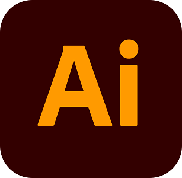

About me

Currently pursuing a perfect blend of style and function for a wide
range of interactive graphic design. For the past 6 years I've helped
global companies, organizations and start-ups reach business goals
with user focused, interactive design. I enjoy bringing clarity to
complex problems with a people first approach.
I am a complete social animal. Find my work on
Behance & Dribbble. Experience my photography skills on
Instagram & Flickr.
TECHNICAL SKILLS
As a reluctant graphic designer, I fled from a traditional path and explored my creativity, trough trying my hands on various techniques and software. Software is more than just a tool, and I try to dig deep into it. Today, I knack for critical thinking, empathy and creativity to create viable and impactful solutions using these technologies.
EDUCATION
I spent 3 years learning Art and Graphic Design, got my Bachelor degree in Communication and Applied Art and started working independently. I think one should never stop learning and go through a process of acquiring knowledge.
- 2009-2012:Crowmont Design School, California
- 2012-2014:Cedarglen University Of Design, New York
- 2014-2017:Shorepath Collegiate Institute Of Performance Design, New York
EXPERIENCE
- MAR 2014 - PRESENT: UX/UI Designer (Facebook Studio, New York)
- JUL 2013 - MAR 2014 Art Director (Dropzone, NYC)
- Jan 2013 - Jul 2013 Graphic Designer (Sagmeesterwaash, NYC)
- OCT 2011 - Jan 2013 Design Assistant (Woodfoote Ducks, California)